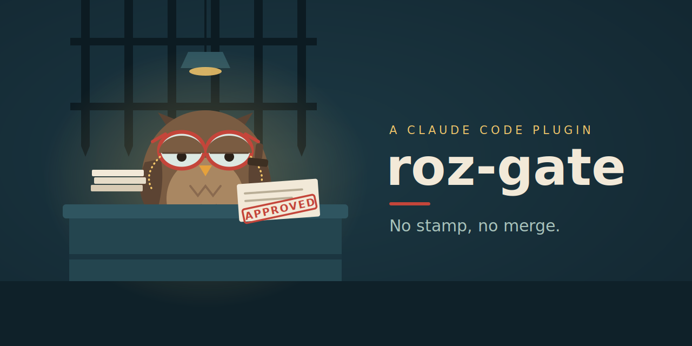

Roz Gate turns a repository into a role-driven pipeline run by specialized AI agents — a product advocate, an engineering manager, an implementer, a blind black-box QA, an independent reviewer. Agents do the work. You make every decision that matters: the pipeline stops at explicit gates and cannot cross them without you.
Roz Gate 把一個 repository 變成由專職 AI agents 運轉的角色驅動流水線——產品代言人、工程經理、實作者、看不到實作的黑箱 QA、獨立審查者。工作由 agents 完成,但每個重要決定都是你的:流水線在明確的 gate 前停下,沒有你就過不去。
The loop is the time-honoured commercial structure for buying work you cannot fully watch. You never build — you sign.
這套 loop 就是商業世界行之有年的結構:買你無法全程盯著的工作。你從不施工——你只簽字。
Six roles run the loop. The five specialist names are seats — workflow vocabulary that never changes. Who actually sits in a seat is per-project config (the ### Roz Gate personas block): link an agent you already own — implementer: backend — or keep the plugin default. Every dispatch attaches the seat's Owns/Never contract, and init lints a linked persona against it. Persona is swappable; the contract never is. Click a role.
六個角色運轉這個 loop。五個專職名稱是席位——workflow 的詞彙,永不改變。席位上實際坐誰是每專案的配置(### Roz Gate personas block):連結你已有的 agent——implementer: backend——或用 plugin 預設。每次派工都附上席位的 Owns/Never 契約,init 連結時會對照檢查。Persona 可換,contract 不換。點任一角色。
Gold fences are gates: only you open them, by applying a label or merging. Everything between the fences runs itself.
金色柵欄是 gate:只有你能開——貼上 gate label 或 merge。柵欄之間的一切自己運轉。
One rule underneath everything: gate labels are authorizations — only you move them. Transient labels are status reports — only the machine moves them. Neither ever touches the other's. Click a label.
底層只有一條規則:gate label 是授權——只有你能動;transient label 是狀態回報——只有機器能動。兩邊永不越界。點任一標籤。
A fictional story: "export search results as CSV", filed from a phone. Watch the labels change and who moves them.
虛構故事:「把搜尋結果匯出成 CSV」,從手機隨手開的 issue。看標籤如何變化、由誰推動。
Answer two or three questions about the issue in front of you; get the exact next move. This mirrors patrol's own classification table.
回答兩三個關於眼前這張 issue 的問題,得到明確的下一步。邏輯與 patrol 的分類表完全一致。